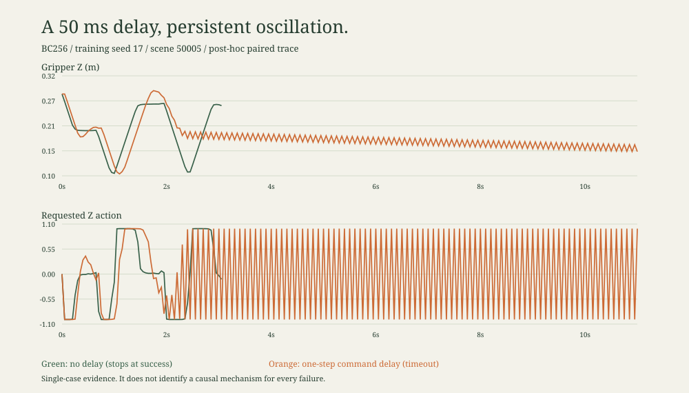
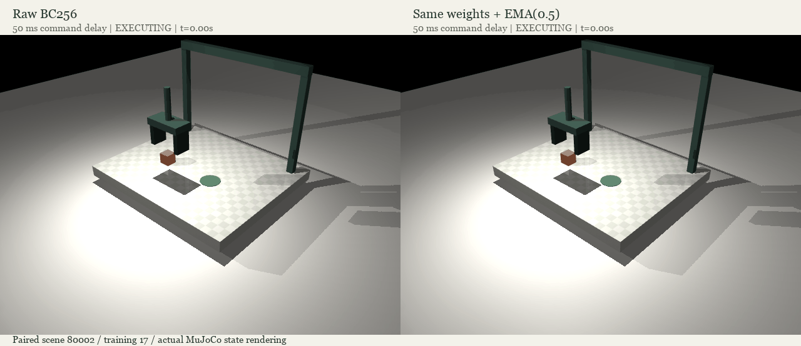
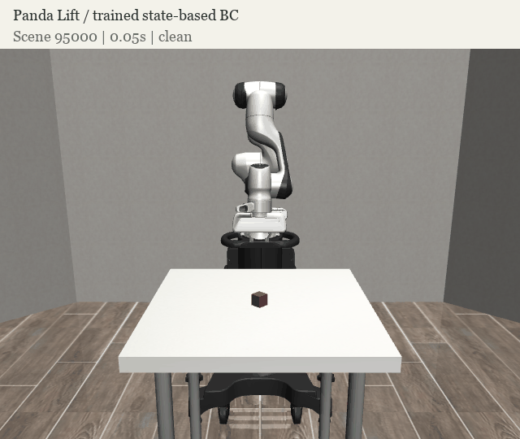

01 / 预先指定的主假设未获支持
-7.72 pp
相对坐标 + 噪声增强，相对原始 BC32，在五种扰动条件的平均成功率差值。
配对双轴 bootstrap 95% 区间：[-12.60, -2.68] pp。仅五个训练种子，属于探索性不确定性估计，不能泛化成算法优劣定论。
演示成功，不代表部署可靠。我们在五个训练/数据子集种子、六种部署条件下检查低数据模仿学习，保留没有支持原假设的结果。
均值与样本标准差来自五个训练/数据子集种子。每个种子、每个条件评测 100 个场景。小屏幕可横向滑动表格查看全部条件。
| POLICY | Clean ID | New position | Sensor noise | 50 ms delay | Mass / friction | Combined |
|---|---|---|---|---|---|---|
| BC32 | 94.8%SD 8.5% | 68.2%SD 11.2% | 97.2%SD 3.1% | 87.0%SD 8.7% | 92.8%SD 11.3% | 60.4%SD 13.1% |
| + Relative | 85.6%SD 19.0% | 73.6%SD 16.6% | 95.0%SD 2.7% | 80.6%SD 14.2% | 77.8%SD 18.0% | 53.4%SD 20.4% |
| + Noise | 96.6%SD 4.6% | 62.6%SD 10.6% | 97.6%SD 2.6% | 86.8%SD 11.7% | 96.2%SD 5.4% | 56.8%SD 15.2% |
| + Both | 96.2%SD 1.9% | 77.6%SD 4.6% | 97.0%SD 2.0% | 69.0%SD 34.7% | 82.0%SD 15.7% | 41.4%SD 24.8% |
| BC256 reference | 100.0%SD 0.0% | 99.0%SD 1.2% | 99.8%SD 0.4% | 49.6%SD 17.8% | 100.0%SD 0.0% | 71.0%SD 12.5% |
相对坐标 + 噪声增强，相对原始 BC32，在五种扰动条件的平均成功率差值。
配对双轴 bootstrap 95% 区间：[-12.60, -2.68] pp。仅五个训练种子，属于探索性不确定性估计，不能泛化成算法优劣定论。
BC256 从干净条件到 50 ms 指令延迟的平均成功率变化。更低的离线验证损失没有保证这项闭环部署测试表现。
这是本任务内的观察，不是“更多数据导致更差性能”的因果结论；相同 epoch 下，数据预算和更新次数同时变化。

事后诊断样例：首个训练种子的首个延迟失败场景。无延迟 61 步成功；有延迟 220 步超时。末尾 40 步的 Z 指令每步变号，只证明这个样例存在持续振荡，不代表解释了全部失败。
在真实机械臂模型任务中重复时延测试；比较不改输入的延迟训练、显式动作队列观测、时序模型，分别控制数据预算与优化步数。在新测试前固定协议，而不是在当前测试上调到满意为止。
使用自建 MuJoCo 笛卡尔夹爪、状态输入、固定物体形状。没有相机输入、语言模型、真机或外部复验。噪声训练使用已知测试噪声等级，不能称为未知传感器泛化。主比较之外的结果没有进行多重比较校正；完整假设和选择规则已在训练前保存在 protocol.json。
| MODEL | CONDITION | 17 | 29 | 43 | 71 | 97 |
|---|---|---|---|---|---|---|
| raw32 | Clean ID | 80% | 100% | 100% | 95% | 99% |
| raw32 | New position | 53% | 79% | 79% | 62% | 68% |
| raw32 | Sensor noise | 93% | 100% | 100% | 95% | 98% |
| raw32 | 50 ms delay | 79% | 98% | 87% | 93% | 78% |
| raw32 | Mass / friction | 73% | 100% | 100% | 94% | 97% |
| raw32 | Combined | 43% | 77% | 69% | 56% | 57% |
| relative32 | Clean ID | 97% | 77% | 99% | 56% | 99% |
| relative32 | New position | 90% | 76% | 84% | 47% | 71% |
| relative32 | Sensor noise | 97% | 91% | 95% | 94% | 98% |
| relative32 | 50 ms delay | 90% | 87% | 81% | 56% | 89% |
| relative32 | Mass / friction | 90% | 63% | 97% | 55% | 84% |
| relative32 | Combined | 66% | 69% | 62% | 19% | 51% |
| noise32 | Clean ID | 98% | 100% | 100% | 96% | 89% |
| noise32 | New position | 60% | 67% | 77% | 61% | 48% |
| noise32 | Sensor noise | 98% | 100% | 100% | 96% | 94% |
| noise32 | 50 ms delay | 83% | 94% | 92% | 97% | 68% |
| noise32 | Mass / friction | 98% | 100% | 100% | 96% | 87% |
| noise32 | Combined | 47% | 72% | 71% | 57% | 37% |
| relative_noise32 | Clean ID | 99% | 96% | 97% | 94% | 95% |
| relative_noise32 | New position | 82% | 79% | 81% | 75% | 71% |
| relative_noise32 | Sensor noise | 98% | 95% | 100% | 96% | 96% |
| relative_noise32 | 50 ms delay | 10% | 93% | 93% | 67% | 82% |
| relative_noise32 | Mass / friction | 97% | 73% | 96% | 60% | 84% |
| relative_noise32 | Combined | 4% | 66% | 61% | 33% | 43% |
| raw256 | Clean ID | 100% | 100% | 100% | 100% | 100% |
| raw256 | New position | 100% | 99% | 100% | 99% | 97% |
| raw256 | Sensor noise | 100% | 100% | 100% | 100% | 99% |
| raw256 | 50 ms delay | 45% | 51% | 79% | 41% | 32% |
| raw256 | Mass / friction | 100% | 100% | 100% | 100% | 100% |
| raw256 | Combined | 63% | 87% | 82% | 63% | 60% |
在另外 4,500 个回合中，固定原有 BC256 权重与新场景，对比原始执行、XYZ 增益减半、固定 0.5 系数的指数平滑。新测试前固定系数，没有搜索最好参数。
预先指定的 50 ms 延迟主比较：EMA 减原始执行。配对双轴 bootstrap 区间 [+17.0, +42.6] pp。
干净条件差值 -0.4 pp。100 ms 下 EMA 反而退化：这是有适用边界的工程基线，不是通用时延算法，也不宣称平滑方法原创。
| EXECUTION | CONDITION | SUCCESS | 成功回合平均步数 |
|---|---|---|---|
| identity | clean | 100.0%SD 0.0% | 59.4 |
| identity | delay_50ms | 56.0%SD 11.9% | 74.2 |
| identity | delay_100ms | 52.4%SD 29.9% | 114.8 |
| gain_half | clean | 36.6%SD 47.5% | 88.9 |
| gain_half | delay_50ms | 84.0%SD 10.2% | 93.8 |
| gain_half | delay_100ms | 88.6%SD 6.7% | 111.1 |
| ema_half | clean | 99.6%SD 0.9% | 68.1 |
| ema_half | delay_50ms | 86.6%SD 14.7% | 82.6 |
| ema_half | delay_100ms | 40.6%SD 24.5% | 111.7 |
成功步数以成功为条件，不能直接作为配对速度比较。该后续研究由先前发现启发，模型家族选择已有事后偏差；场景种子 80000–80099 为新保留集。主比较以外的对比仅供探索。

自动选择首个训练种子的首个由失败变成功的配对案例。原始记录同时保存干净条件和 100 ms 条件下的退化案例，不只保留改进视频。
robosuite Panda Lift：128 条专家训练轨迹、16 条验证轨迹、五个优化随机种子，完成 1,500 个学习策略回合和 100 个基线回合。使用上游任务，不把自建夹爪成绩当作迁移成绩。
原样迁移 EMA(0.5)，50 ms 时延下官方成功率的配对差值。探索性双轴 bootstrap 区间 [-23.2, +10.4] pp。
不论效果正负，都保留结果。任务、底层控制器与动作状态分布变化后，原任务的滤波收益不能直接外推。
| CONDITION | 官方高度成功 | 连续保持 8 步 |
|---|---|---|
| clean | 100.0%SD 0.0% | 100.0%SD 0.0% |
| clean_ema | 77.2%SD 13.8% | 77.2%SD 13.8% |
| delay50 | 67.2%SD 12.0% | 66.4%SD 11.1% |
| delay50_ema | 60.8%SD 9.1% | 60.0%SD 8.6% |
| delay100 | 70.8%SD 6.4% | 70.0%SD 7.9% |
| delay100_ema | 77.6%SD 6.4% | 75.2%SD 6.4% |
官方阈值与持续保持分开报告。200 控制步 horizon、固定旋转动作与提前停止规则不同于完整标准榜单协议。这里是本地标准任务复验，不是第三方独立验证；相同结果产生的退化 bootstrap 区间不代表总体成功率为 100%。

首个干净条件成功样例，经实际策略复跑和逐字段一致性校验。无图像输入、无硬件、无 VLA 或安全认证。版本兼容失败、修复记录和依赖锁文件一并保留。